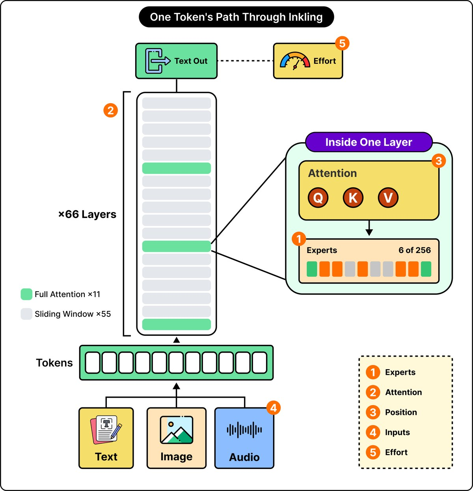

Kobo Instapaper Image Test
This page tests the same ByteByteGo diagram in multiple forms.
A — Original Substack CDN
If this is broken on Kobo, it reproduces the original problem.

B — Direct original PNG
This bypasses the Substack image proxy but keeps the original large PNG.

C — Resized 1200px JPEG
This should be the safer Kobo-compatible version once hosted publicly.

D — Resized 800px JPEG
This is the most conservative version.
E — Exact Instapaper image tag
This uses the exact image tag generated by Instapaper for the broken ByteByteGo image.